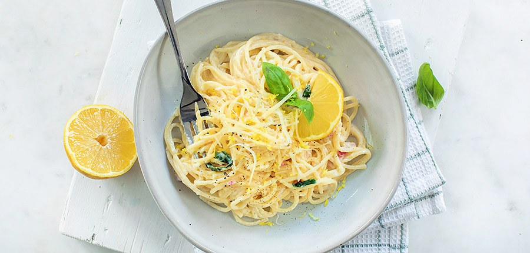

Pasta met citroen

Ingredienten
- 150g spaghetti
- 1 citroen
- 1 uitje
- 40g parmezaanse kaas
- 1 teen knoflook
- 125g mascarpone
- peper en zout
- basilicum
Bereiding
- kook de spaghetti gaar in een pan met ruim water en een snuf zout. Bij afgieten, vang je wat van het kookvocht op.
- Snipper het uitje en knoflook fijn. Fruit aan in een pan met een beetje olie. Rasp de citroen en pers het sap uit. Voeg toe aan de pan met ui en knoflook. Roer de mascarpone erdoor. Voeg de spaghetti toe en een beetje kookvocht.
- Doe de geraspte Parmezaanse kaas erbij en roer alles door elkaar. Voeg peper en basilicum toe.